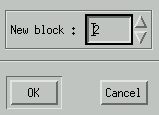
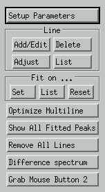
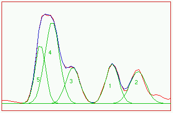
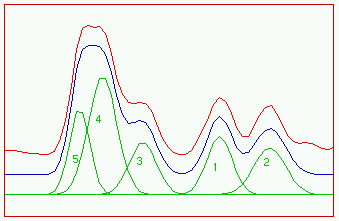
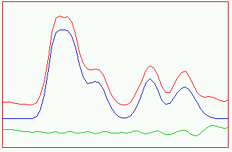
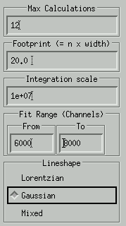
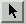
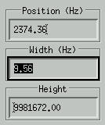
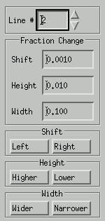

Line Fit
This routine performs automatic curve fitting of overlapping lines.
It uses a Levenberg-Marquardt fitting routine. The fit function can be
Lorentzian, Gaussian or Mixed Lorentzian and Gaussian. Use Options->Line
Fit to activate the line fitting procedure. First, one is asked
to select a new block to hold the calculated lines. For example, if the
spectrum is displayed in block 1, chose block 2 (must be a block with a
higher number).

After that, the following popup menu shows up.

The experimental spectrum will now be displayed in block 1 and the calculated
peaks in block 2. The optional difference spectrum will also be displayed
in block 2 (in the imaginary data array).

Example 1. Experimental (red) and fitted (blue) spectrum superimposed
(default settings). The separate peaks (green) are made visible by the
Show
All Fitted Peaks button.

Example 2. Experimental and fitted spectrum displayed separately (adjust
scaling). The red line is the original spectrum, the blue line is the
fitted spectrum, which is the sum of all the green lines.

Example 3. Also the difference spectrum is displayed (green line).
Setup Parameters
This option activates a popup menu with the current parameters.

Max Calculations
Maximum number of calculations for the simplex line fitting procedure.
Footprint
This defines the footprint of the peaks. For example, a precision
of 20 defines the width of the peak at the baseline at 20 times the width
at half height.
Integration scale
Scaling factor used by the Line->List procedure.
All integrals are divided by this number.
Fit Range (Channels)
The range used for the line fitting procedure. Usually this is equal
to that of the experimental spectrum.
Lineshape
The line shape of the peaks can be defined as Lorentzian, Gaussian, or
Mixed Lorentzian/Gaussian. If the Mixed option is chosen, the distribution
Lorentzian/Gaussian is determined automatically per peak by the fitting
algorithm.
Line
Add/Edit
The best way to add a line is to use the mouse. Define mouse button 1 as
Assign
Line Fit .
Now set the mouse cursor on the desired line and press button 1.
The user is only prompted for the estimated line width (at half height).
The line height and position are taken from the experimental spectrum.
The line is drawn immediately.
Alternatively, one can use the Add/Edit option to add a new line
or to edit an old one. First select a line number. Then edit the
position, width and height of the line.

Delete
Delete an existing line. The line is not really deleted, but only hidden.
To restore the line, use the Add/Edit option.
Adjust
Adjust a line interactively. Shift a line or adjust its width or
height. The result is calculated and displayed immediately. Use the
Fraction
Change options to define the sensitivity of the adjust buttons.

List
List all lines with some properties. For example:
line pos.(hz) pos.(ppm)
width height integr.
1 2344.012
4.687 13.8 9.85e+06
20.7
2 2363.678
4.726 11.9
4.9e+06 8.89
If Lineshape is set to Mixed, the Lorentzian/Gaussian fraction is also
displayed, expressed in the fraction of Lorentzian shape. For Example:
line pos.(hz) pos.(ppm)
width height integr.
mix(L)
1 1887.144
3.773 1.04 3.84e+06
0.425 0.00338
2 1885.120
3.769 1.82 1.89e+06
0.472 0.671
3 1881.407
3.762 1.23 5.99e+06
0.787 0
4 1876.186
3.751 1.27 1.16e+06
0.157 0
5 1875.046
3.749 1.78 2.66e+06
0.719 1
In this example, line 3 is fully Gaussian and line 5 is 100% Lorentzian.
Line 2 is 67.1 % Lorentzian.
Fit on ...
Optimize Multiline
Fit the user defined lines with the measured spectrum, using a simplex
procedure.
Show All Fitted Peaks
Remove All Lines
Remove all previously defined lines. This is a real reset, in contrast
to the Line->Delete option, that simply hides some lines.
Difference Spectrum
Calculate and show the difference spectrum of the measured spectrum
and the calculated lines.
Grab Mouse button 1
Set the second mouse button to peak selection.